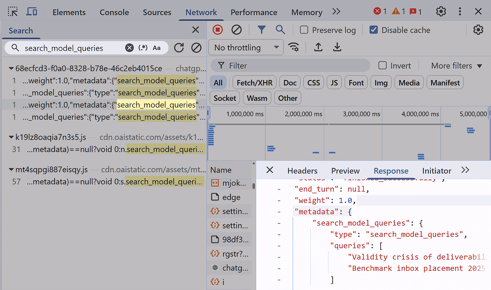

一、问题数量不是越多越好
AI搜索问题池没有适用于所有企业的标准答案。单品类小企业和多产品跨国品牌面对的搜索意图完全不同，问题数量自然不同。真正要判断的不是题库有多大，而是它能不能覆盖用户做选择时会问的关键问题。
问题太少，会让团队只看到品牌词表现，以为AI已经理解自己；问题太多，又会让监测变成无休止的数据收集，没人有精力复盘和修复。好的问题池应该像一套可维护的测试样本，稳定、分层、可比较，并且能对应到实际页面和证据。
对多数企业来说，可以先从20到40个核心问题开始，覆盖品牌、品类、场景、竞品和风险五类。业务复杂后再扩展到80到150个问题。更大的样本适合多地区、多产品线和高风险行业，但前提是团队有处理能力。
监测规模还要看复盘节奏。如果团队每周只能处理五个问题，就不应该同时追踪几百个答案。更现实的做法是先让基础池产生稳定发现，再把新增问题放入扩展池，等有明确行动能力后再提高覆盖面。
二、先按业务场景分层

AI搜索问题池的设计，应从业务场景开始。用户不是为了完成企业的监测表而提问，他们会按自己的任务表达需求：了解品牌、寻找方案、比较供应商、确认价格、判断风险、寻找替代品或验证口碑。
因此，问题池至少要覆盖三条链路。第一是认知链路，用户想知道你是谁、做什么、是否可信。第二是选择链路，用户想比较你和其他方案。第三是风险链路，用户担心价格、效果、合规、售后或适用限制。
Google Search Console的查询数据可以帮助团队发现传统搜索里的真实问法，销售记录和客服问题能补充AI搜索里的决策表达。AI问题池不是凭空想出来的，它应该来自用户真实语言，再转化为可长期复测的样本。
这种分层还能帮助不同团队协作。市场团队关心品类和竞品问题，销售团队关心采购限制，客服团队关心售后和误解，技术团队关心页面是否能被引用。问题池把这些需求放在同一张地图里。
| 场景层 | 用户想解决什么 | 监测价值 |
|---|---|---|
| 品牌认知 | 你是谁、是否可信 | 检查品牌定义和事实准确性 |
| 品类选择 | 有哪些方案可选 | 观察是否进入候选集合 |
| 场景适配 | 我的行业或预算能不能用 | 验证推荐理由是否匹配 |
| 竞品比较 | A和B怎么选 | 发现差异描述和误判 |
| 风险确认 | 价格、合规、效果有什么限制 | 发现负面或过时信息 |
三、基础池、扩展池和预警池要分开
问题池最好不要只有一个大表。基础池用于长期趋势，数量少但稳定；扩展池用于覆盖更多产品、地区和行业；预警池用于重大舆情、政策变化、价格调整、产品下线或竞品攻击等特殊情况。三类问题的频率和复盘方式可以不同。
基础池要尽量长期不变，因为它承担可比性。扩展池可以按季度调整，把新增业务和新出现的用户问法纳入。预警池则可以临时创建，问题生命周期结束后归档，不要长期占用常规监测资源。
这样的分层能避免两个极端：一种是为了稳定，永远只看十几个老问题；另一种是为了全面，每周都把题库改得面目全非。前者看不到变化，后者无法比较历史。
| 问题池 | 建议规模 | 复测频率 |
|---|---|---|
| 基础池 | 20到40个 | 每周或双周 |
| 扩展池 | 40到120个 | 每月或按季度 |
| 预警池 | 10到30个 | 事件期高频 |
| 长尾池 | 按业务追加 | 抽样复查 |
四、不同规模品牌的起步数量
小品牌最常见的问题不是样本少，而是没有稳定样本。刚开始做AI搜索监测时，20个精心设计的问题比200个随意生成的问题更有价值。它们能让团队快速发现品牌定义、官网引用、竞品关系和事实错误。
中型品牌通常需要更完整的分层。比如一家B2B SaaS可能有多个行业方案、多个角色、多个竞品和不同价格版本，只看品牌词显然不够。此时可以把基础池保持在30到50个，扩展池按行业、角色和产品线增加。
大型品牌或高风险行业则需要更严格的监测治理。医疗、金融、法律、教育、工业安全等领域，错误答案的影响更大，需要覆盖风险问题、合规边界、地区差异和第三方信息源。但即便如此，也应先定义优先级，而不是无限扩张。
数量建议也要和组织结构匹配。总部品牌、区域团队、产品线负责人和客服团队看到的问题不同，如果没有统一分层，各团队会各自建表，最后得到无法合并的结果。先统一分类，再分配维护责任，监测才会长期运行。
起步数量还要留出人工复核空间。AI答案需要人判断事实和语气，样本设计过大，最先被牺牲的往往就是复核质量。
| 品牌类型 | 起步问题数 | 重点覆盖 |
|---|---|---|
| 单品类小品牌 | 20到30个 | 品牌定义、核心服务、主要竞品 |
| 多服务中型品牌 | 40到80个 | 场景、价格、行业、比较问题 |
| 多地区品牌 | 80到150个 | 城市、门店、渠道和本地口碑 |
| 高风险行业 | 按风险扩展 | 合规、限制、错误事实和安全边界 |
五、样本设计要覆盖问法差异
同一个搜索意图可以有很多问法。用户可能问“哪家好”，也可能问“怎么选”“适合谁”“有没有替代方案”“预算不高怎么办”。AI搜索对问法很敏感，问题池如果只覆盖企业内部术语，就会错过真实用户语言。
但问法差异也不能无限扩展。建议每个核心意图保留一到三个代表问法：一个直接问法，一个场景问法，一个比较或风险问法。这样既能看到语义变化，又不会让样本膨胀到无法维护。
传统搜索数据、站内搜索、销售问答、客服工单、社媒评论和投放关键词，都可以提供问题候选。把这些候选按意图合并，再挑出最能代表用户决策的版本，才是合理的样本设计。
- 每个核心业务至少保留品牌、品类、场景和比较问题。
- 高转化页面对应的问题优先进入基础池。
- 用户经常误解的服务边界要单独设问。
- 容易引发风险的价格、合规和效果问题进入预警池。
- 内部术语必须配一个用户自然语言版本。
六、删减问题和新增问题同样重要
问题池不是越积越厚的资料夹。每隔一段时间，团队要检查哪些问题已经失去业务意义，哪些问法长期没有变化，哪些问题和其他样本重复，哪些新问题来自销售、客服或舆情。删减能保持监测表可用。
一个问题是否应该保留，可以看三点：它是否代表重要决策，它是否能触发可行动的改进，它是否在历史上出现过明显变化。如果答案都是否，它可能只是看起来完整，实际不会帮助团队做判断。
新增问题也要有入口标准。新产品上线、新竞品出现、新地区开放、定价调整、政策变化、负面讨论增多，都可以触发新增。新增后要标注原因和日期，避免几个月后没人知道这个问题为什么存在。
归档不等于删除历史。已经失效的问题仍然可以保留在历史记录里，用来解释过去的答案变化。只是它不再占用常规复测资源，也不会继续影响当前问题池的优先级。
| 操作 | 触发条件 | 处理方式 |
|---|---|---|
| 保留 | 长期代表关键决策 | 进入基础池持续复测 |
| 合并 | 多个问题答案高度重复 | 保留最自然问法 |
| 新增 | 业务或舆情发生变化 | 标注来源和日期 |
| 归档 | 产品下线或场景失效 | 保留历史但停止常规复测 |
七、监测结果要连接页面和证据
每个问题都应该能追溯到一个或多个页面资产。品牌定义问题对应关于页和首页，服务边界问题对应服务页，价格问题对应定价说明，案例问题对应客户案例，风险问题对应FAQ、合规声明或帮助文档。没有对应页面的问题，很难形成修复动作。
AI搜索问题监测和OpenAI evals的思路相近：输入样本要清楚，期望表现要明确，输出结果要能判断。品牌监测不需要把答案机械打分到每个字，但至少要知道什么算准确、什么算误导、什么算证据不足。
监测结果还要反向指导内容优先级。如果十个问题都暴露同一个缺口，例如AI总是说不清价格口径，团队就应该优先建设价格解释页，而不是继续增加更多泛泛的品牌文章。
这也是控制问题数量的原因。可行动的问题会让团队知道下一页该写什么、哪条证据该补齐、哪个过时来源该处理；不可行动的问题只会消耗复盘时间，让真正重要的错误被埋在表格里。
- 给每个问题绑定目标页面或证据来源。
- 为关键问题写清期望答案要点。
- 把错误分成事实错误、引用错误、品类错误和风险夸大。
- 把连续出现的问题转成内容、技术或PR任务。
- 每月复盘一次问题池是否仍覆盖真实业务。
八、结论：用稳定样本看趋势
品牌应该监测多少个AI搜索问题，答案不在一个固定数字里，而在监测目标、业务复杂度和团队行动能力之间。问题池太小会失真，太大则会变成负担。合理规模应该让团队既看得到趋势，又处理得了问题。
起步时，用20到40个核心问题建立基础池；成熟后，用扩展池覆盖行业、地区、竞品和风险；遇到特殊事件，再用预警池临时提高密度。这样的结构比一次性生成几百个问题更稳，也更容易复盘。
因此，在GEO体系中，问题数量本身不是成绩。真正重要的是这些问题是否来自真实用户决策，是否能长期复用，是否能暴露品牌认知偏差，并且是否能推动官网、内容、证据和技术层面的改进。
参考文献
- Google Search Console Help：Performance report，https://support.google.com/webmasters/answer/7576553
- Google Developers：Search Analytics query，https://developers.google.com/webmaster-tools/v1/searchanalytics/query
- OpenAI Developers：Working with evals，https://developers.openai.com/api/docs/guides/evals
- Microsoft Learn：RAG evaluators，https://learn.microsoft.com/en-us/azure/foundry/concepts/evaluation-evaluators/rag-evaluators
- NIST：AI Risk Management Framework，https://www.nist.gov/itl/ai-risk-management-framework
FAQ
Q1：小品牌真的需要监测几十个AI搜索问题吗？
需要，但不必一开始做得很大。小品牌至少要覆盖品牌定义、核心服务、主要品类、竞品比较和常见风险问题。20到30个高质量问题通常就能发现基础偏差，比只问品牌名更可靠，也不会给团队造成过重维护负担，后续再按业务扩展。
Q2：问题池可以用AI自动生成吗？
可以辅助生成，但不能直接照单全收。AI生成的问题容易覆盖表面问法，却不了解企业真实业务优先级。更好的流程是先收集销售、客服、搜索查询和用户访谈，再用AI扩展表达，最后由业务团队筛选进入基础池，并标注来源。
Q3：为什么不监测越多越准确？
数量增加不一定带来更好判断。大量重复或低价值问题会稀释注意力，让团队只看总分而忽略具体错误。AI搜索监测的目标是发现可修复偏差，不是证明题库庞大。每个问题都应能对应页面、证据或业务动作，否则就是噪声。
Q4：问题池多久调整一次合适？
基础池应尽量稳定，建议按季度小幅调整；扩展池可以根据产品、地区和行业变化每月或每季度更新；预警池则跟随事件创建和归档。调整时要保留历史版本，避免因为题目变化而误判AI答案趋势，也方便解释历史报表和异常波动。
Q5：每个平台都要问同一套问题吗？
核心问题最好保持一致，方便比较不同AI产品对品牌的理解差异。但不同平台的使用场景不同，也可以增加少量平台特定问题。横向比较时要谨慎，不要把一个平台的答案机制当成所有AI搜索的共同规律，纵向趋势通常更有解释力。
Q6：如何判断一个问题应该进入基础池？
看它是否代表重要用户决策，是否可能影响品牌选择，是否能触发明确改进动作。比如“这家公司靠谱吗”“A和B怎么选”“适合某行业吗”“价格大概怎样”通常值得保留。纯内部术语或低频好奇问题可以放入扩展池，降低复测频率。
Q7：监测问题和传统SEO关键词有什么区别？
SEO关键词多用于理解搜索需求和页面流量，AI搜索问题更接近完整决策语境。它常包含场景、比较、限制和风险，而不是几个词。两者可以互相补充：关键词提供需求线索，AI问题负责测试答案是否准确、可信和可引用。